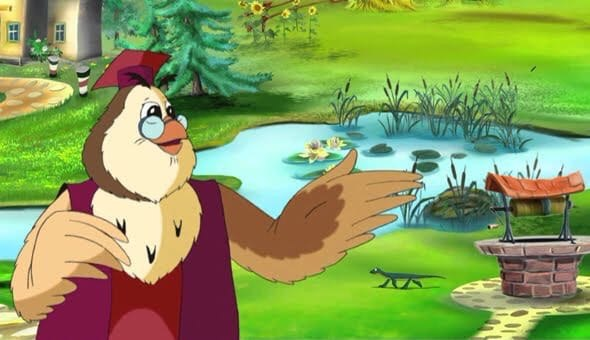
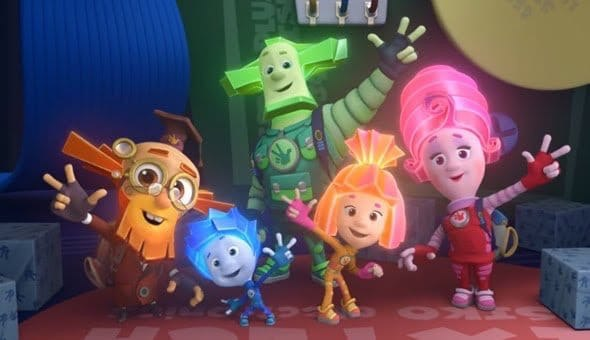
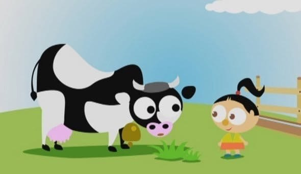
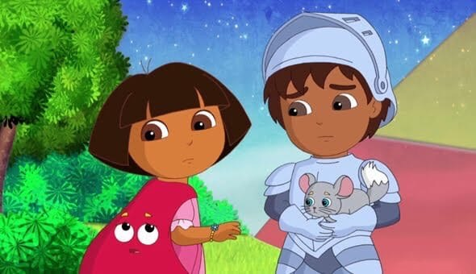

5 отличных развивающих мультфильмов для детей
Почти все педиатры сходятся во мнении, что до двух лет детям лучше не смотреть мультики — до этого возраста они могут принести малышам только вред. А вот для родителей детей постарше мультфильмы могут оказаться не только спасением от шума и гама, но и помощью в обучении. Мы честно пересмотрели почти все развивающие мультфильмы и выбрали самые интересные и полезные.
1. «Уроки тётушки Совы»
Мудрая Сова в очках и с указкой медленным голосом (хотя для детей, пожалуй, в самый раз) помогает ребёнку изучить алфавит по буквам, первые десять цифр и другие азы русского и математики. Самое интересное, что в этом мультфильме есть уроки и об абстрактных понятиях — доброта, красота и так далее, — что редко встречается в остальных программах.
2. «Фиксики»
Если вы никогда не слышали о самом популярном российском мультфильме, вы живёте в завидном информационном вакууме. Приключения маленьких людей-фиксиков, обитающих в разных устройствах, заслужили свою громкую славу. Во-первых, изначально созидательным посылом, который заложен уже в названии. А во-вторых, тем, что именно этот мультфильм учит детей с раннего возраста правильно пользоваться техникой и интересоваться её устройством.
3. «Зоопарк»
Никогда не поздно узнать о зверях что-то новое! В каждой серии «Зоопарка» ребёнок ближе знакомится с двумя животными, узнает, чем эти звери питаются и какие у них отличительные черты. Иногда эти пары неожиданные, например, лев и пчела. Мультфильм особенно хорош для городских детей, которые вряд ли узнают от родителей, сколько литров молока даёт в день корова (если вы тоже не в курсе — 30 литров).
4. «Клуб Микки Мауса»
Микки Маус, Дональд Дак, Гуфи — ради такой компании любой взрослый захочет вновь стать ребёнком. «Клуб Микки Мауса» — это ещё один интерактивный мультфильм, на этот раз от всемирно известной студии Disney. В начале каждой серии герои выбирают нужные «маусструменты» и с помощью маленьких зрителей решают задачи или выпутываются из неприятностей.
5. «Даша-Следопыт»и « Вперед, Диего,вперед»
О знаменитой «Dora The Explorer» вы могли слышать ещё до того, как стали родителями. Первый мультфильм посвящён приключениям Даши, которая путешествует по миру, а второй (от тех же создателей) — её кузену Диего, обитающему в тропических джунглях. Основная фишка этих сериалов в их интерактивности. Ребёнок здесь вовлечён в сюжет и помогает героям решать задачки, находить подсказки, а при просмотре англоязычной версии дети могут развивать лингвистические таланты, запоминая слова на новом языке.
